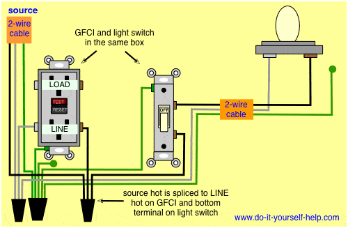
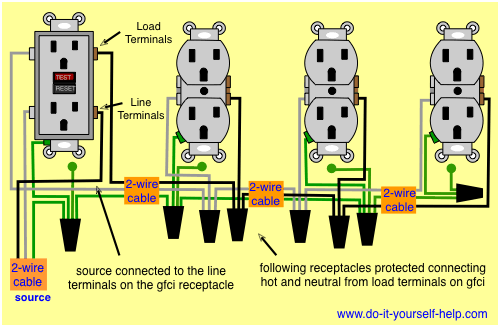
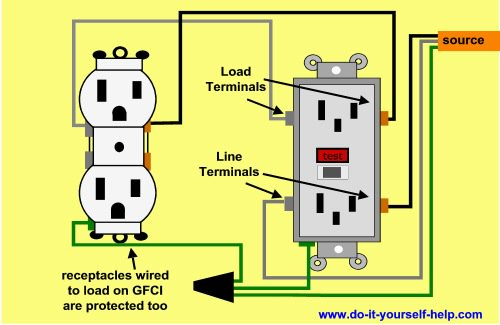

Building your own workstation is not that easy. It requires a lot of wood and wires and can take thousands of dollars out of your bank account. But we will walk through how I am building one. We will first discuss the electrical system.
It all starts when we install a power strip containing 10 outlets. We plug in certain cables containg 2 wires and a ground wire. 9 of these we need. All of these feed power to a GFCI. But they power certain things. Here is the first image
The main circuit. The black wire goes to a gold screw, the silver to a silver screw, and the green wire to ground. This powers all the accessory outlets and powers the wood router. 6 times for the accessory outlets and once for the router.
We also need to find a way to wire up the various lighting systems. They are not powered by a common light switch. To find out how the dimmers are wired for the cabinets' inside lights and the lights for between the cabinets, refer to this video, which will be Video 1: We also need to take into account the router's back lighting and the lighting on the area on the left of the left cabinet and the right of the right cabinet. For the dimmer wiring that powers the lights in these areas, refer to this video, which will be Video 2: This video does it for 3 colors, but for each place where this system is applied, you need 1 dimmer and 1 power socket. In the description, you can find the circuit diagram. Refer to that to do the wiring. Watch to find out how they do the power sockets. The ground anchor screws can be made by screwing aluminum to the trim with 2 small screws, then install the nut. More about that in the wood part. The red wire gets soldered to the positive tab of the power socket. The positive one is the shorter terminal. Each place where this system is will have 2 strips of the same color. The red wire then gets soldered to the positive tab. The black wire gets soldered in a loop at one end where the copper wire is exposed and tightened to the ground anchor screw with a nut. It is then soldered to the longer negative terminal. 
This is the outlet wiring system for the lights in the inside of the cabinets and the lights between the cabinets. For the router's back lights and the lighting on the left of the left cabinet and the right of the right cabinet, the outlets are wired as seen on this picture: 
THat was all of the electricity work. Next, we will work on the wood part. That means we are going over the body frame, table frame, table top, and paint job. In the final part, we will go over the placement of all the outlets, switches, and lighting.
It is time to start the frame. We start with 8 foot lengths of 2x2 wood. We need 3 of them for this section, as well as one that is 6 feet long. We cut a foot off of 2 of them and then cut another one into half. For the 6' one, we chop it in half and use one length, with the other used for the other segment. We also need 1 8' 2x4 wood piece and cut it into 3' lengths, saving the other 2' for another project. The lengths are for 2 of the support legs. We then cut 3 6' 2x2s into half for the other legs. We also need to assemble another of the first segment. Now that we have our assembly line, we start assembling the main frame together. We start by assembling the first segment. We wood glue all the pieces with Gorilla Wood glue and screw them in using the following: #10 3 inch wood screws and a 3/16" drill bit, Philips Head screw bit. From my math, so far we will need 6 wood screws. We wood glue the legs in and the other segment, with the other 4 screws used to secure the 2nd segment to the legs. That is the main body. Now for the table frame. We make it 84 inches by 52 inches out of 2x4s. We make 7' lengths, 8 of which we'll need. Then we make 4 inch cutouts. For the first screwing, we will need lengths at 11 inches, 1' 10", 2'8", 3' 7", 4' 10", 5' 11", and 6' 6". For the 2nd, we will need lengths at 8 inches, 1' 6", 2' 10", 3' 5", 4'7", 5' 6", and 6' 3". We will need to go like this: 1st screwing, 2x4, 2nd screwing, 2x4, 1st, 2x4, 2nd, 2x4, 1st, 2x4, 2nd, 2x4, 1st, 2x4, 2nd, 2x4, 1st. That makes up the main part. We now need 1x6 common board, 4 things we need. We need to cut 2 to 7' 2" lengths and 2 to 4' 4" lengths. To assemble the wood frame, we add wood to the sides. We make them all 3 feet wide, but 1 we need 7' 2" long and 2 more we need at 4' 4". We then wood glue one that is as long as it is wide. We need 2 that are 1' 10" by 3' and add magnetic catches, a door handle, and cabinet hinges. These are for, you guessed it, the cabinets. To make the floor, we need a piece of wood 3' 10" by 7' and 2 that are 2" by 2'. These 3 panels we glue together and then glue them to the bottom segment. All the other panels we will wood glue to the main frame. We then wire up the electrical system. We then make the table top, made out of 9 4' by 8' by 1/4" pine sanded plywood. We cut four of them to 7' lengths and cut the last one to 8 4" by 7' lengths. We glue the 4' by 7' piece to the 4" by 7' piece. We make 8 of them and glue them all together. We glue it to the table frame before putting on the border. After gluing it, we then add the border pieces. Before we glue the table top to the frame, we paint the outside of the frame with a caramel color with the inside of the cabinets being blue. We paint the tabletop caramel as well. We assemble everything and then do the lighting. The very last thing to do is to build in a router station. Follow the instructions as seen in this video: After that, you are done! You just built your very own workbench! We need to repaint over the pencil marks with ivory and it is ready to go.